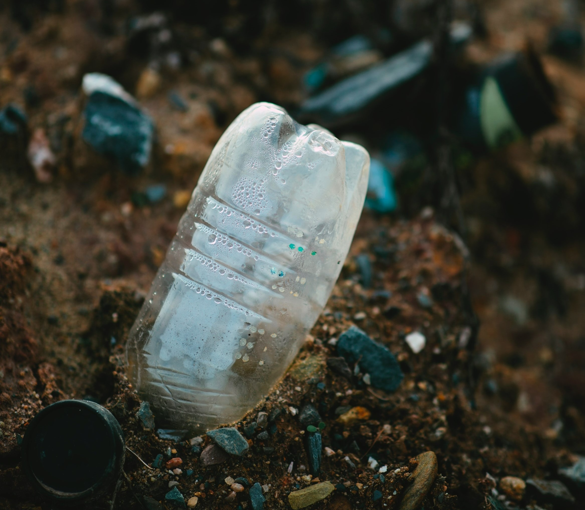
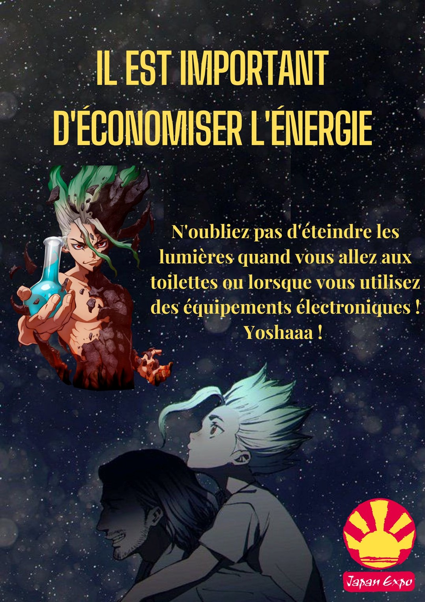

SEMESTRE 3
Voici la liste des SAE que j'ai pu réaliser
lors du Semestre 3 du BUT HSE.
 SAÉ 3.01 : Concevoir et présenter un document unique d'évaluation des risques d'une petite structure. À l'aide d'un camarade de classe, j'ai réalisé le document unique de son entreprise sur la partie empaquetage. J'ai donc pu rechercher les contraintes règlementaires liées à l'empaquetage, les risques qui pouvaient être présent dans cette zone et ainsi réaliser une cotation et prendre les mesures adéquates pour prévenir ces risques. Un Gant a été réalisé tout au long de cette SAE afin d'être plus efficace dans notre travail.
SAÉ 3.01 : Concevoir et présenter un document unique d'évaluation des risques d'une petite structure. À l'aide d'un camarade de classe, j'ai réalisé le document unique de son entreprise sur la partie empaquetage. J'ai donc pu rechercher les contraintes règlementaires liées à l'empaquetage, les risques qui pouvaient être présent dans cette zone et ainsi réaliser une cotation et prendre les mesures adéquates pour prévenir ces risques. Un Gant a été réalisé tout au long de cette SAE afin d'être plus efficace dans notre travail.
SAÉ 3.02 : Proposer un plan de gestion des déchets, rejets et/ou ressources. Cette SAE rejoint de ce que je peux faire en entreprise. J'ai donc visité une entreprise et analysé les différents types de déchets et rejets présents. L'objectif était de comprendre les sources d'émissions de déchets, et de proposer des solutions tout en respectant la règlementation et en restant dans une démarche scientifique et technique.
SAÉ 3.03 : Conseiller un organisateur d'événement en matière de sécurité du public et d'impact environnemental. Voici mon travail (PDF). J'ai trouvé cette SAÉ très utile puisque j'ai pu apprendre la gestion d'un évènement ayant déjà eu lieu en promulguant les valeurs QHSSE. J'ai choisi la Japan Expo. J'ai donc préparé des dossiers liés à la sécurité et aux aspects développement durable de l'évènement. J'ai également cherché à sensibiliser le public présent lors de l'évènement en réalisant notamment des affiches (vous pouvez voir un exemple à gauche) en m'adaptant au public visé.